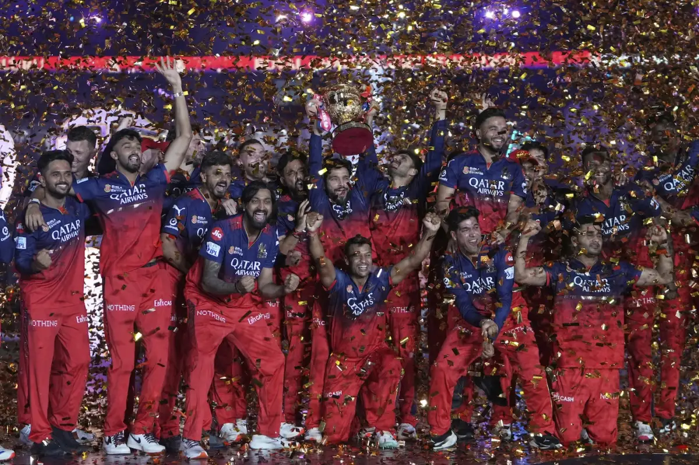
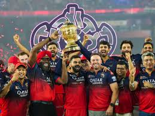

The 2025 Indian Premier League, also known as IPL 18th and branded as TATA IPL 2025, was the 18th edition of the Indian Premier League, a professional Twenty20 cricket league. The tournament featured 10 teams competing in 74 matches. It began on 22 March and was held across 13 venues before being suspended on 9 May due to the 2025 India–Pakistan crisis. The matches resumed from 17 May across six venues, with the final rescheduled from 25 May to 3 June. VIRAT KHOLIThe defending u
- History 
- Background This article is about the sport. For the insect, see Cricket (insect). For other uses, see Cricket (disambiguation).
- Foundation and The tournament featured 10 teams competing in 74 matches
- termination The matches resumed from 17 May across six venues
- Administration
- Viratkholi
- Royal Challangers Bangalore
- 05.11.1988
- Organisation 
- Teams
- Current Teams They won their first title in 2025
- Defunct Teams The team finished as the runners-up on three occasions: in 2009, 2011, and 2016
- TimeLine

- Royal Challengers Bengaluru, formerly Royal Challengers Bangalore,
also known as RCB, are a professional Twenty20 cricket team based in Bengaluru,
Karnataka, that competes in the Indian Premier League (IPL).
Founded in 2008 by United Spirits, the team's home ground is M. Chinnaswamy Stadium.